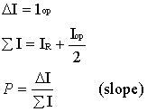
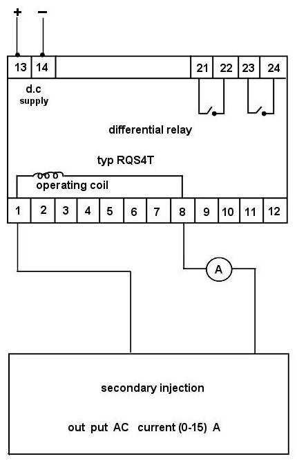
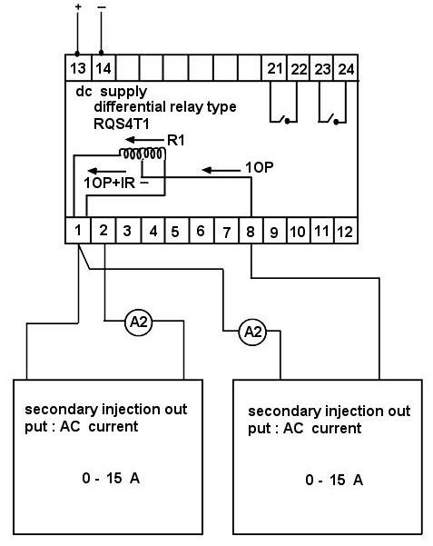
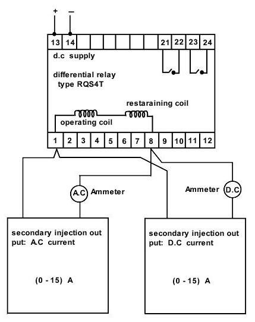
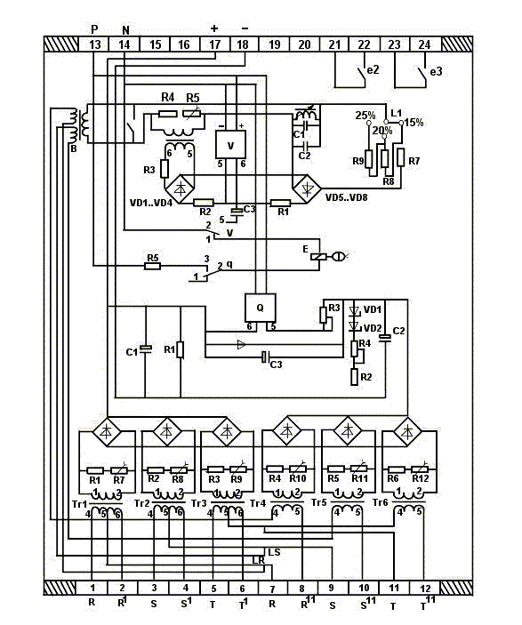

|
Protection |
Technical Procedure |
RQS4T1
Germany
|
|
|
|||
| Equipment RQS4T1 Germany |
Document No: DfR-007-r0 | |||
| Issued to: Networks | ||||
| Status: APPROVED | ||||
| Procedure: |
Approved Date: 05 Feb 2000 | |||
| Date to be Reviewed: Feb 2005 | ||||
Introduction
Its a highly sensitive moving coil relay type RQS4T1 is used as measuring system which is applied with voltages over a rectifier bridge circuit which are proportional to the sum current and difference current - The current proportional voltages are gained on the burdens of the input transformer. The units are constructed according to the modular unit principle and accommodated in standard housings, which consist of alight metal base plate. The metal frame and the removable moduled cover with transport glass window.
The response current at holding current zero can be infinitely adjusted by means of good accessible adjusting knobs - in case of fault a neutral relay with drop indicator is actuated by the moving coil relay. This meutral relay can be reset from the outside by means of a pushbutton
This procedure, details the steps required to completely check the proper operation and calibration of the transformer differential relay. It is recommended this procedure be carried out on a yearly bases.
This document is the formatted way to minimize the possibility of error causing personal injury or damage to equipment.
Safety Precautions
Safety and healthy
Tools and Equipment
DC supply 110 V
Two AC ammeters.
DC ammeter, Test leads.
Two Secondary Injection Current Test set (10A)
DC current source (10A)
Work to be Carried Out
Checking the Minimum Pick Up
Check Of the Percentage Differential Characteristics Slope


Figure 1: Checking the minimum pick up

Figure 2: Checking the percentage differential characteristic's slope
Check Of the 2nd Harmonic Restraint
Percent Second Harmonic = (0.424 x IDC ) / ( IDC + 0.9 x IAC ) x 100 %)

Figure 3: Checking of the 2nd harmonic restraint

Figure 4
Test Sheet
Zone:
Station:
Transformer: Voltage Level:
Protection type: Relay type: RQS4T1
C.T.R.: Relay notation:
Relay data: ANX. Voltage:
| Date |
Setting in AMPS. |
Results in Amps | Remarks | Tested by | ||
| Phase R | Phase S | Phase T | ||||
| P.U. | P.U. | P.U. | ||||
|
|
|
|
|
|
|
|
|
|
|
|
|
|
|
|
|
|
|
|
|
|
|
|
|
|
|
|
|
|
|
|
Checked by: Signature: Date: